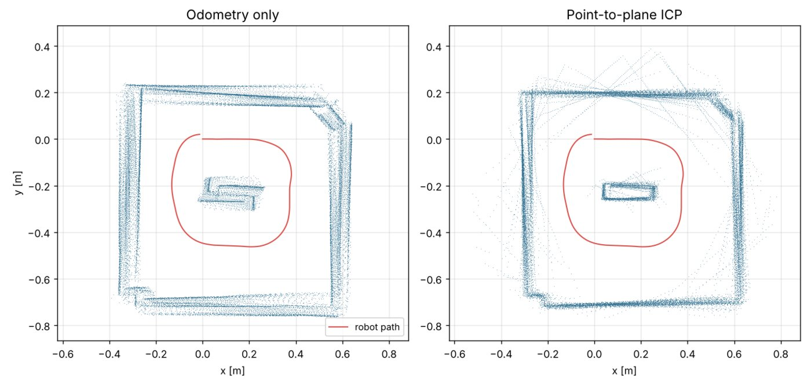
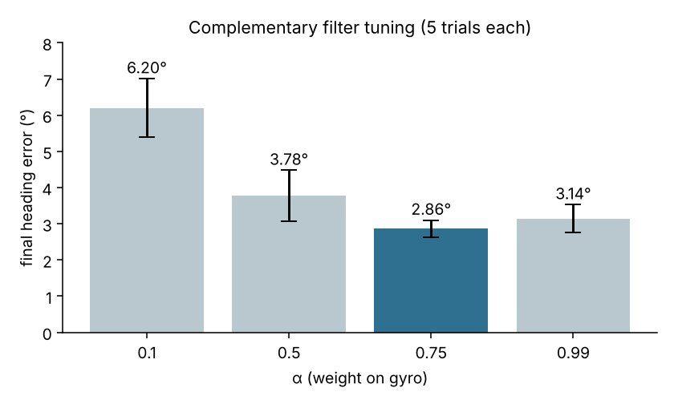
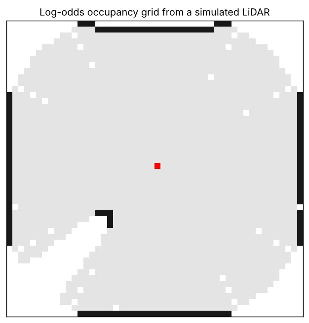

Mobile Robot State Estimation, Mapping & Localization

Overview
Over a semester of labs, my group and I built up the core of a mobile robot's navigation stack from scratch on a TurtleBot3 in ROS 2: estimating heading, aligning LiDAR scans, building a map, and then localizing the robot in that map from an unknown start. Each piece fed the next, and each was demoed live in a design review with course staff.
1. Heading estimation with a complementary filter
The gyroscope is precise in the short term but drifts as small biases integrate; wheel encoders don't drift the same way but break down when wheels slip. Fusing them gives a better yaw estimate than either alone.
- Wrote ROS 2 nodes that integrate the gyro's angular rate into yaw, extract yaw from wheel odometry, and fuse the two with a tunable weight α.
- Designed a repeatable test (forward, turns in both directions, reverse) that returns the robot to its starting heading, then measured final heading error with a protractor over five trials per α.
- α = 0.75 (mostly gyro, a little odometry) gave the lowest and most consistent error: 2.86° ± 0.24°, versus 6.20° when relying mostly on the encoders.
- Later re-implemented the fusion node in C++, using message filters to time-synchronize the IMU and odometry streams.

2. Scan matching with ICP
- Transformed each LiDAR scan into the odometry frame (quaternion → rotation, then translation), using TF lookups at the scan's own timestamp. Unsynchronized clocks between robot and laptop broke these lookups, so we set up chrony time sync.
- Point-to-point ICP: nearest-neighbor matching with a KD-tree, then the best-fit rotation and translation in closed form via SVD (the Kabsch method), with a reflection check.
- Point-to-plane ICP: estimated a surface normal at each map point, then solved a linearized least-squares problem that only penalizes error along the normal, so scans can slide along walls. It converges with a mean residual around 2×10−4.
3. Occupancy-grid mapping
- Traced each LiDAR beam through the grid (Bresenham's line algorithm), marking cells along the beam as more likely free and the cell where it hits as more likely occupied.
- Stored beliefs as log-odds, so each update is just an addition, and clamped them between 10% and 90% so the map can still change its mind.
- Combined this with ICP on the robot to map the course arena at 1 cm resolution and saved it for localization.

4. Localization with a particle filter
Given the saved map, the robot has to figure out where it is. Monte Carlo localization tracks a cloud of guesses (particles).
- Motion update: moved every particle by the odometry change between readings, computed with SE(2) transforms, plus a little Gaussian noise.
- Measurement update: projected LiDAR beams from each particle and scored how close they land to walls using a precomputed distance transform of the map, a fast likelihood-field model.
- Resampling: systematic resampling, triggered only when the effective number of particles drops below half, to avoid throwing away diversity too early.
- Published the resulting map → odom transform so the rest of ROS knows where the robot is. With the robot placed at a random pose and a rough initial guess given in RViz, the particles converged and tracked it for two full laps of the arena.
Also in the course
- Computer vision: thresholding (including Otsu's method), Sobel and Canny edge detection, and Gabor filters for texture with OpenCV.
- Machine learning: gradient descent by hand, then PyTorch autograd and a small neural network, including testing how it fails to generalize outside its training range.
- Planning: A*, weighted A* and heuristic admissibility on 8-connected grids.